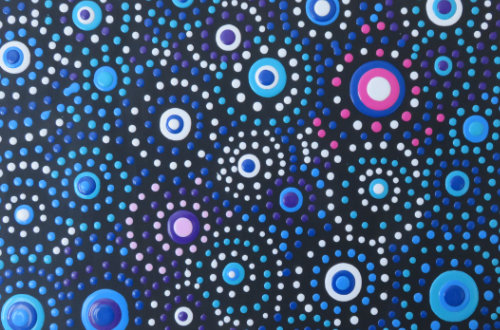
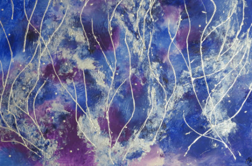

Painting
Even as a child I loved to draw and to paint. A few years ago I circled back to my interest and tried acrylic on canvas. It's a lot of fun because I'm not attached to the outcome. My paintings pretty much never look how they are intended to look.
So far, I've used cling foil to create waves and interesting colour combinations, have added window colour into the mix, incorporated dried petals and flowers, tried pouring and blob paint.
Painting is on hold for now.

I practiced:
- to just go with it
- focusing on the process
- to listen to inspirtation
- to start a painting
- to finish a painting

I learned:
- painting is fun if I focus on the process instead of the outcome
- about the power of compounding: ten minutes a day result in a sizeable body of work over time.
- a shitty piece of work can just be painted over again. And again. And again.
- I'm a messy painter with normal paint. Pouring just brings out the worst in me.